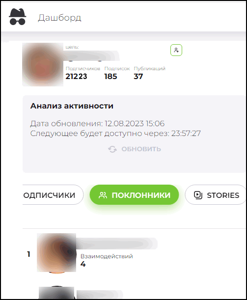
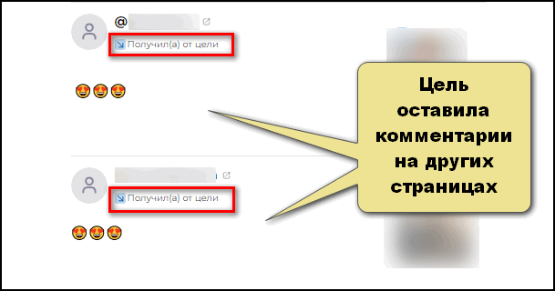
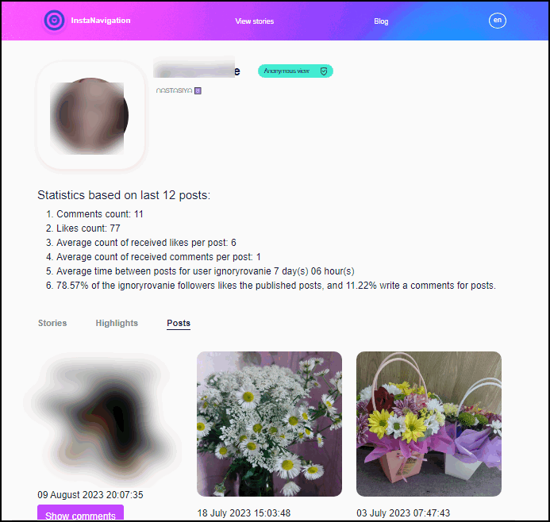
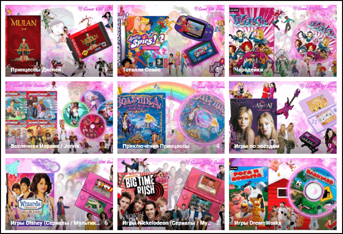
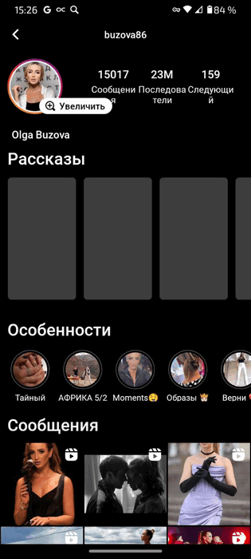

Как смотреть фотографии и видео в Инстаграме другого человека анонимно

Смотреть фото в Инстаграм* анонимно не так сложно, как может показаться на первый взгляд. Есть сервисы, мобильные приложения и перенос данных в другие социальные сети, если нужно глянуть несколько фото.
Новые правила мобильной и компьютерной версий Инстаграма*
Ограничения на просмотр контента были добавлены в одной из последних версий. Так, даже воспользовавшись ссылкой, не всегда получится перейти к изображению. Для этого понадобится прямой адрес на картинку или отправить её с помощью сохранения в Галерею смартфона. Другие особенности:
- владелец профиля может скрыть контент от определенного человека, выбрав в настройках: «Аккаунты с ограниченными возможностями»;
- в Историях видно кто посещал страницу, но есть вариант смотреть Stories анонимно. Этот раздел лучше просматривать через сервисы и приложения, если не хотите быть замеченным.
Есть несколько способов, как сделать своё посещение чужой страницы максимально анонимным:
- сервис Инсташпион. Откроет доступ к Историям, Актуальному, Reels и даже гостям профиля;
- перенос в другие социальные сети. Нередко пользователи делятся одним и тем же снимком в разных социальных сетях;
- Инстанавигатор. Еще один сервис, где можно просматривать чужие профили без страха за анонимность;
- попросить друзей и знакомых отправить ссылку. Или же сделать скриншот снимка, чтобы посмотреть только изображение.
Можно выбрать один из вариантов или применить сразу несколько, чтобы точно получить доступ ко всему контенту интересующего человека.
#1 Инсташпион – лучшее решение
Сервис Инсташпион позволяет смотреть любой контент, который размещен в свободном доступе. Кроме этого, поддерживает работу с закрытыми аккаунтами, но для этого нужно подключить любую свою учетную запись.

Основные разделы для слежки и просмотра фотографий:- публикации. Перечень всех постов, которые есть в профиле;
- Reels. Короткие видео, которые можно смотреть даже, не отображаясь в статистике;
- Истории и Актуальное. Также не появится гость в списке зрителей;
- Поклонники. Те, кто заходит на страницу интересующего пользователя чаще всего;
- комментарии и взаимные лайки. Отображается, кому поставил лайк и кто отправил взаимный. Есть демонстрация всего списка постов, где посетитель оставил отметку «Мне нравится».

Еще одно преимущество сервиса – возможность перейти к разделу: «Комментарии и лайки» и по нинейму посетить анонимно страницу другого человека. Как воспользоваться Инсташпионом, чтобы анонимно смотреть фото и видео в Инстаграм*:- Зайти в сервис – авторизоваться удобным способом: по адресу электронной почты или создать страницу с помощью Google или Вконтакте.
- Указать никнейм человека за которым нужно наблюдать – появится список похожих никнеймов и миниатюры аватарки.
- Нажав по нужному человеку, начнется загрузка информации о нем.
Далее, нужно переходить по разделам, чтобы посмотреть данные. Можно подключить сразу несколько страниц и переключаться между ними, чтобы увидеть обновленную информацию. Преимущество сервиса в том, что он запоминает предыдущий поиск и сохраняет страницы за которыми оформлена слежка.
#2 Инстанавигатор: разблокировать страницу
Смотреть фото в Инстаграм* без регистрации поможет сервис Инстанавигатор. Он не сохраняет предыдущий выбор и историю поиска, не требует авторизации. Но и не работает с закрытыми учетными записями.

Чтобы воспользоваться:- Зайти в Инстанавигатор – вписать в пустом поле поиска название аккаунта.
- Подождать, пока появится информация – перейти во вкладку: «Публикации».
- Посмотреть нужные фото и видео.
Показывает краткую сводку по статистику, открывает доступ к Историям и Актуальному. Чтобы посмотреть комментарии, нужно нажать по записи и снизу появится одноименная кнопка. Анонимен, но одновременно можно работать только с одним аккаунтом. Также поддерживает переход из одного профиля в другой посредством подсвеченных ссылок-никнеймов.
#3 Помощь друзей и знакомых
Друзья и знакомые могут поделиться ссылкой на саму публикацию или сделать скриншот, отправив фотографию. В этом же случае актуально создание дополнительной учетной записи, чтобы следить за чужим аккаунтом. Проблема в том, что если друг поделится на фотографию из закрытой страницы – она не откроется. Появится надпись: «Контент защищен настройками приватности».
Посмотреть закрытый профиль в Инстаграм* ⏩⏩ узнай, как сделать это быстро
Просмотр чужого фото:
- Убедиться, что вышел со своей учетной записи.
- Попросить друга или знакомого отправить ссылку на фотографию.
- Перейти по ссылке с помощью компьютерной версии.
- Посмотреть нужный снимок.
В этом режиме нельзя оставлять комментарии, а попытка открыть полный список может обернуться уведомление: «Авторизуйтесь для дальнейшего просмотра».
#4 Другие социальные сети и импорт
Зачастую пользователи делятся удачными снимками в других социальных сетях. Например, обновляют аватарку в Вконтакте или загружают фото в альбом.

Зная имя и фамилию можно отыскать человека в другой социальной сети:- Зайти в ВК — Поиск.
- Вписать данные — перейти в профиль.
- Альбомы — посмотреть нужное фото.
Или поискать человека с помощью поисковых систем Google, Яндекс, чтобы найти учетные записи. Появятся страницы, которые могли быть заброшены пользователем или автор ведет их неактивно. Среди них могут быть не только новые фото, но и те, которые редко появлялись в Инстаграм* или вовсе не были опубликованы.
#5 Приложения для Android и iOS
Смотреть фото в Инстаграм* анонимно помогут мобильные приложения для смартфонов. С их помощью можно просматривать аккаунты, без подключения к своей учетной записи: скачивать фото и видео на смартфон. Для Android такое приложение — Profile Viewer, iOS — Save&Download Stories. Владельцам Айфонов предложена рдна утилита, направленная на загрузку и просмотр Историй. Владелец профиля не узнает, что его посетил другой человек из-за анонимности. Воспользоваться приложением на Android:
- Зайти в Play Market — вписать название: Profile Viewer.
- Скачать и установить — открыть.

- Появится поле поиска, куда можно вставить никнейм.
- Перейти к безопасному просмотру фото и видео.
Кроме фотографий, посетителю будут доступны закрепленные публикации и Истории. Их можно посмотреть и скачать на смартфон. Еще одно достоинство приложения – История поиска. Все ранее найденные аккаунты будут в строке поиска, где можно перейти к ним и посмотреть. Но чтобы использовать подобную утилиту, нужно включить. Иначе пользователь не может даже перейти к поиску человека.
Узнает ли владелец профиля
Смотреть видео в Инстаграм* анонимно или фото одним из указанных способов – идеальный вариант того, что владелец страницы не узнает о посещении. Дополнительные сервисы могут быть бесплатными или условно платными, но выполнять функции, которые недоступны через официальное приложение. Какие разделы показывают посещения:
- Истории. Отображают всех, кто их просматривал или реагировал;
- статистика для бизнес-аккаунтов. Показывает в диаграмме из какого города было посещение;
- лайки и комментарии. Если гость случайно оставил отметку «Мне нравится».
Если заходить через сторонние сервисы, предлагающие анонимный просмотр – то в никаком из разделов не отобразится. Заходя со своего или дополнительного аккаунта нужно следить за лайкамии, которые можно случайно поставить при нажатии на фото или двойным тапом, и не переходить в Историю.
Если открыть Актуальное, где записи были добавлены более суток назад, то владелец также не узнает о посещении.
Потому что в Хайлайтс не показываются страницы гостей после 24-х часов от добавления, но видно общее число зрителей.